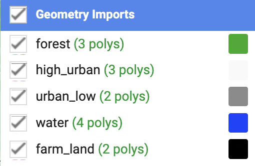

For this entry, we focus on atmospheric correction in GEE, with specific on the Wollongong area, in New South Wales Australia. We initially chose this region because the name is particularly interesting but also has the advantage of having interesting characteristics:
is surrounded by the ocean on the east
wilderness on the western side
urban areas in Wollongong itself, providing ground contrast interesting to analyse.
2 Setting the area in GEE
We start of our analysis by getting a simple view of the studied area. Here, we have Wollongong illustrated through S-2 with images collected between January and October 2022. In this case, we selected images with less than 1% cloud cover, which allows up to not need to implement a cloud mask but provide a clear image of the area:
Whilst this method allows for clear images, when studying an area these might not always be available. For example, the study area might not have sufficient low cloud-cover images as the research is time specific (i.e. focused on a specific time period). For this reason, the below image is the result we have when include images with up to 20% cloud cover:
2.1 Understanding how the cloud mask works
The urban area of Wollongong is particularly covered in clouds, so-much so that none of the urban area is visible. To counter this, we use a cloud mask which uses the QA60 band, where the QA stands for ‘Quality Assurance’ and 60 refers to the granularity of the image, with 60m spatial resolution source. It has two possible values, bit 10 and bit 11 which respectively to opaque and cirrus clouds. Using this band has been particularly successful in developing automatic cloud models for S-2 in GEE ( Li et al. (2022) ).
In addition to the mask, we take the median value of the pixel and apply it as a value. This allows the removal of the clouds whilst also keeping the image information.
NOTE: we acknowledge that other methods which are more efficient exist, as some information is lost with the ‘median’ method. We attempted to use a GEE community provided example of s2cloudless but was unsuccessful as we recurring memory limit issues.
When applying the respective cloud masking function, we get the following result:

We see a significant improvement in the results, with no more clouds appearing in the image. The polygons included above serve as reference areas for the classifications we with to use.
The colours refer to:

3 Classification
By selecting the reference area polygons, we use this as ground truths in classifier models. These serve as reference areas by which our Random-forest will predict in which category areas outside our reference polygons belong:

In this case and all following classification analysis, ‘grey’, ‘blue’, ‘white’, ‘black’, ‘green’ are respectively urban low, water, high urban, farmland and forest areas!
4 Personal Reflection
This entry allowed to further delve into the technical side of GEE.
Initially, we managed to clip the relevant area from the GAUL data set and user forums. This is interesting as we used the clip directly when defining the mask instead of clipping the image separately. The JS code format is as follows:
{javascript eval=FALSE} var waytwo = ee.ImageCollection('COPERNICUS/S2_SR_HARMONIZED') .filterDate('2022-01-01', '2022-10-31') .filter(ee.Filter.lt('CLOUDY_PIXEL_PERCENTAGE',20)) .map(maskS2clouds) // clips the images and applies it over the image collection .map(function(image){return image.clip(wollo)});
Issues were encountered when trying to understand how to make the CART model for classification work. When running the above code, although we managed to clip the image an create the wished layer, we could not get the input to work when getting the cart model. We got the below error:
To counter this, in the JS code, it is important to make the relevant variables as functions in order to apply certain characteristics, such as clipping which works using base commands such as .median():
```{javascript eval = False} // in this example, ‘wollo’ is the shapefile for the project, wollongong // data here collected from Sentinel-2 var waytwo = ee.ImageCollection(‘COPERNICUS/S2_SR_HARMONIZED’) .filterDate(‘2022-01-01’, ‘2022-10-31’) .filterBounds(wollo) .filter(ee.Filter.lt(‘CLOUDY_PIXEL_PERCENTAGE’,20));
// initially we tried making the object work using // where maskS2clouds is a cloud cover function var waytwo_masked = waytwo.map(maskS2clouds) // this does not work as the variable is not a function, but when adding the median() argument, this is no longer an issue // also allows for the removal of clouds as it takes the middle value of each pixel var waytwo_masked = waytwo.map(maskS2clouds).median();
var waytwo_clip = waytwo_masked.clip(wollo) ```
Although this took a while to figure out, trial and error has allowed to better understand how the different functions and notations work in Javascript which will be useful for following analysis.